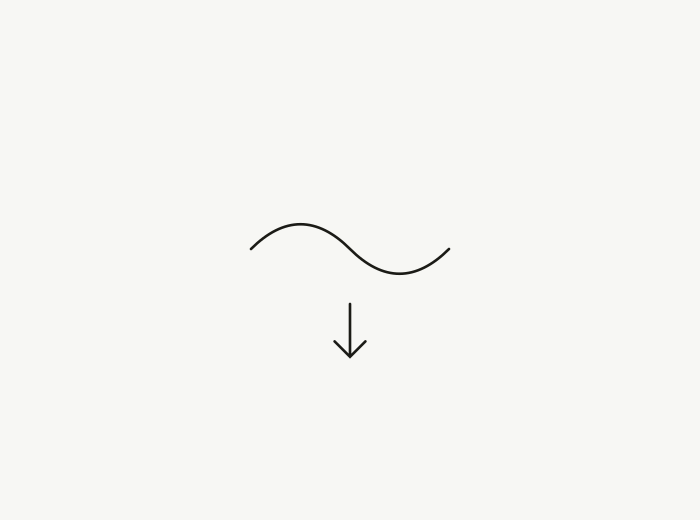
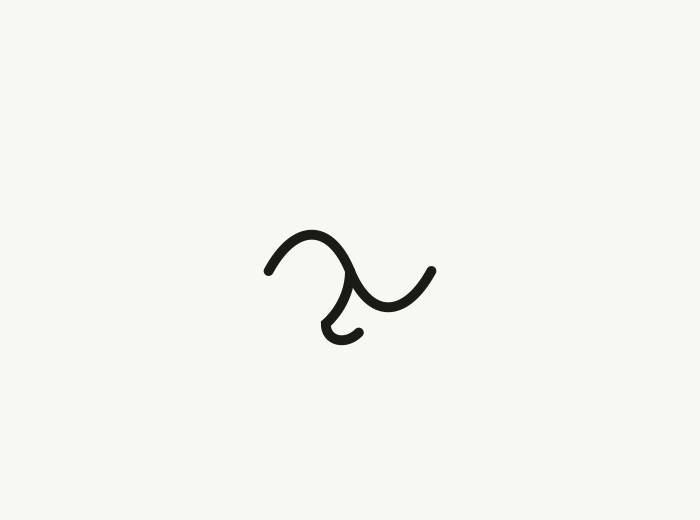
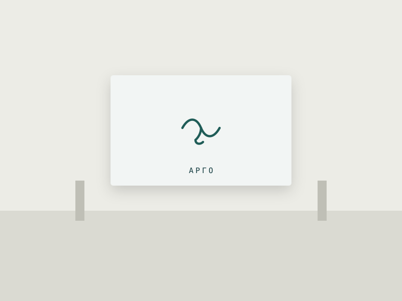
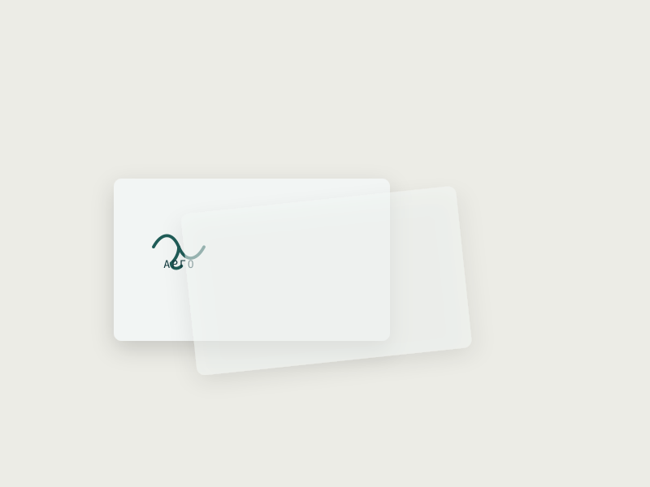
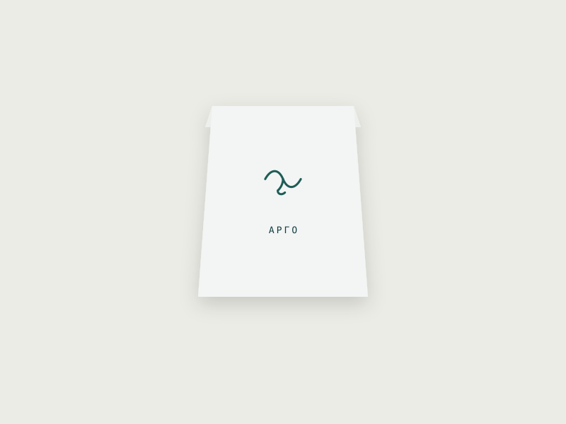
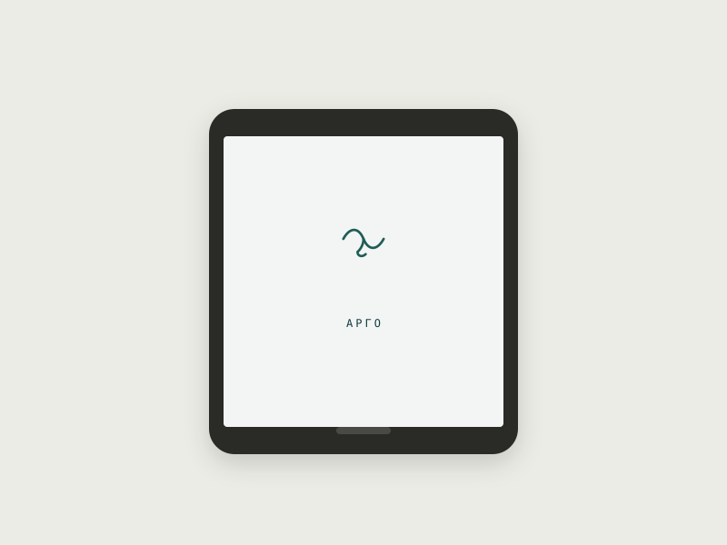

Арго
Логотип ресторана морской кухни: одна линия, в которой волна перетекает в силуэт якоря.

- Клиент
- «Арго», ресторан морской кухни
- Задача
- Только логотип и минимальный набор носителей — без полной системы айдентики
- Роль
- Дизайнер логотипа
Первый эскиз держал волну и якорь как два отдельных элемента — понятно, но плоско: два клише сразу. Задача была свести оба образа в одну непрерывную линию, чтобы знак не читался как коллаж из иконок.
В финальной версии линия волны без разрыва продолжается в крюк якоря — один росчерк, который одинаково хорошо смотрится оттиснутым на бумаге и вышитым на фартуке.
Волна и якорь отдельно — это два клише сразу. Свели в одну линию — и знак перестал быть коллажем.






Логотип занял место на вывеске, меню и упаковке на вынос уже в первый месяц запуска. Владелец отмечает, что знак стал узнаваемым в соцсетях быстрее, чем ожидалось для одного элемента без развитой системы.